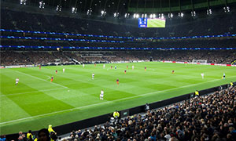

The Premier League, is also know as the English Premier League or the EPL. The Premier League is the top level of the English Football League System. It is contested by 20 clubs and operates on a system of promotion and relegation with the English Football League (EFL). Throughout the season the teams play 38 matchs and it runs from August to May. The teams play each team twice, one at home and away. The Premier League is the most-watched sports league in the world. It is brodcasted in roughly 212 territories to around 643 million homes. The Premier is watched in roughly 188 countries It has a potential TV audience of 4.7 billion people. The point system for the Premier is 3 points for a win, one points for a draw, and you get no points for a losing. Then the team with the most points at the end of the season win the Premier League title. The teams that finish in the bottom three of the league are then transfered to the Championship, which is the seond tier of English football. Then those three teams are replaced by three teams promoted from the Championship. The teams that finish first, second, and third at the end of the season.
